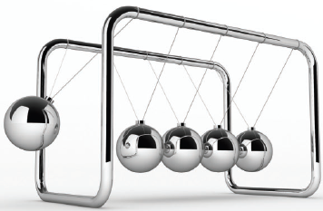

Springs and Conservation of Energy
To begin this lesson, let us watch a short clip.
Conservation of Mechanical Energy
The principle of the conservation of mechanical energy states that the total mechanical energy in a system (i.e., the sum of the potential plus kinetic energies) remains constant as long as the only forces acting are conservative forces.
Perpetual Motion Machines
A perpetual motion machine is a machine that can operate forever without restarting or refueling.
The leftmost ball has gravitational potential energy with respect to the other balls. Once released, the ball will interact with the other balls in such a way as to imitate perpetual motion.

Damped Harmonic Motion
The friction in a real periodic system is referred to as damping and the
harmonic motion of a system affected by friction is called damped harmonic motion.